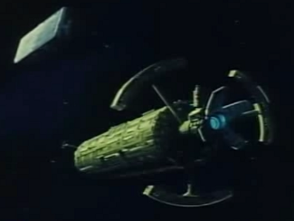
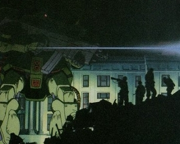

Kintzem & Manipur Kintzem & Manipur
Side 3 Bunch 15 Sealed Colony Cluster The site of the original rebellion against Zeon that brought about the creation of the SS, Kintzem and Manipur are known to be anarchist in nature, their colonists resenting Zeon rule. However, a tight security force and an even tighter media machine has prevented an uprising, and slowly but surely the colonists are coming to understand the good in trusting their masters. Kintzem and Manipur  |